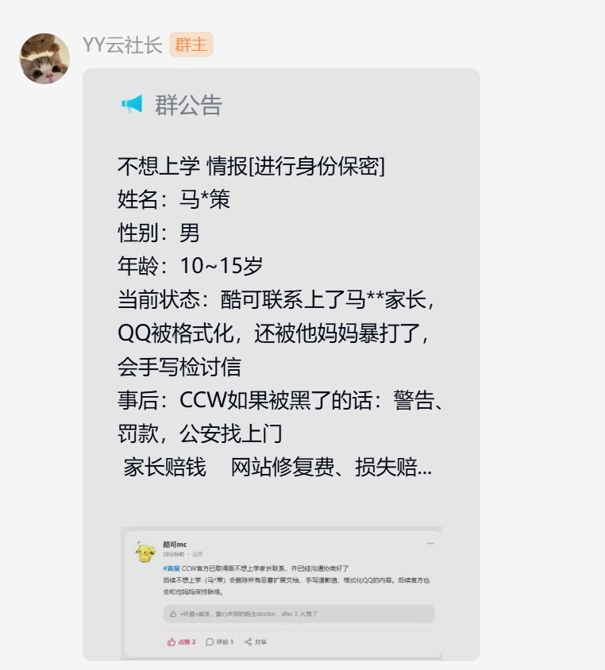

据了解，该社区中名为“不想上学”的用户，因在自己开发的Scratch扩展中加入恶意功能被社区封禁数日，此后开始利用社区扩展功能漏洞在扩展中植入恶意代码进行盗号等攻击。引发众怒。
然而，社区官方并未选择依法依规的报警处理，而是直接拿个人信息联系他的家人，且泄露了这些个人信息，这是更严重的违法行为。
据了解，此前有道小图灵社区也发生过此类事件，官方选择发表声明征集证据以备实施法律手段。
https://t.co/FJ72yi2E1v
然而，社区官方并未选择依法依规的报警处理，而是直接拿个人信息联系他的家人，且泄露了这些个人信息，这是更严重的违法行为。
据了解，此前有道小图灵社区也发生过此类事件，官方选择发表声明征集证据以备实施法律手段。
https://t.co/FJ72yi2E1v
